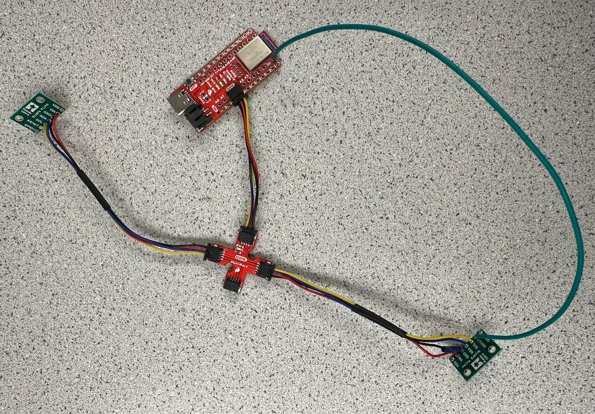

Lab 3
The purpose of this lab is to setup the two Time-of-Flight (TOF) sensors and begin to understand the libraries that control them. We learned basic soldering to connect our TOF sensors to our artemis and QWIIC Breakout board. Additionally, we are aiming to understand the sensitivity of the TOF sensor ranges, and we will discuss issues with TOF sensor placement.
Prelab
The TOF sensors are identical, and thus they have the same I2C address. This address is 0x52. However, we will need to find a solution to change one the sensor's address because two components cannot communicate with the same address without conflicting communication.
The prelab for this lab had us consider a few things regarding planning the wiring between each of the components as well as location of each component on the RC car. The wiring schematic is shown below. We are using 2 TOF sensors to gain information about the car's location and distance from potential obstacles. Our first TOF sensor wil face forward so we can detect obstacles in front of the vehicle. The second TOF sensor can be placed on the front, side, or rear of the vehicle. If the sensor is in the front with the first sensor, there will be intereference between the two sensors, and we will also need to rotate the car to see obstacles on the sides of the car. If we place the sensor on the rear, we will be able to gain information when the car is moving in reverse or is flipped over, yet this still leaves blind spots on the side of the car. For these reasons, I will choose to put the second TOF sensor on the side of the car.

Task 1: Connecting TOF Sensor to QWICC Breakout
The wires from the QWIIC connector were cut, stripped, and soldered to the corresponding pins on the TOF sensor. Then, the other side of the QWIIC connector was connected to the breakout board and connected to the Artemis via a smaller QWIIC connector. A picture of the two TOF sensors properly hooked up as well as one of them wired with an XSHUT wire is shown below.
Task 2: Scanning for I2C Device
As mentioned in the prelab, we expect the I2C address to be 0x52. However., while scanning the I2C channel, it was found that the actual address is 0x29. While this might seem incorret, the last bit is used as the read/write bit. This means that they share the same bits except for the last bit changing between 0 and 1 (change of 23).

Task 3: Testing TOF Sensor Short Mode
The two modes for the TOF Sensor are short and long mode. The two modes have their own pros and cons, and it will be useful to understand as we progress through future labs. The short mode has more accuracy, as it is used for close detection. However, in medium to long distance measurements, it loses its benefit. The long mode can sense objects accurately up to 4 meters away. This will be useful when the robot is moving very quickly, as it gives the robot more time to detect and react appropriately. For this test, I am testing the short mode.
I set up distances on the floor away from a flat, white wall. The TOF sensor was taped to my laptop, and I moved my laptop to different distances in order to find the difference between actual distance and measured distance. For this test, I measured distances at 0.5 m, 0.7 m, 1.0 m, 1.2 m, 1.5 m, and 1.8 m. Although the short mode is only rated to 1.5 meters, I wanted to check its functionality slightly farther. At each distance, I took an average of a few data points and plotted it against the actual distance. The overall setup and plot results are shown below.


Task 4: Two TOF Sensors
My two TOF sensors are connected as shown above in Task 2. After altering the ReadDistance example code, I was able to get both TOF sensors to collect data at the same time. In order to achieve this, we need to first fix the issue with both sensors having the same I2C address. By using the XSHUT pin on one of the TOF sensors, we can achieve this. First, we turn on one TOF sensor, and we change its I2C address to a different address, such as 0x20. Then, we use the XSHUT pin to turn it off, and right after we can initialize the second TOF sensor. This second sensor will take the original I2C address of 0x52 (or 0x29), and then we can power the first sensor back on. Now they are both on and functioned, yet communicating through two different I2C addresses. A screenshot of some data points is shown below.

Task 5: TOF Sensor Speed
In order to speed up the execution of the TOF sensors, the first step is to take out all delays and unneccessary data collection points. By only collecting data when the TOF sensors are ready, we can increase the sampling rate of the TOF sensors. I sent the TOF sensor data to Jupyter along with time stamps to see how fast the data could be sent. A screenshot of my Ardruino code and some of the data printed in Jupyter are shown below. By doing some basic math, we can see that the data is collected about every 10 ms. However, looking at the distance values from the TOF sensors, those only update every 100 ms. This means that the sampling rate of the TOF sensors are our limiting factor.


Task 6: TOF Time v. Distance Analysis
Building off of the previous task, I was able to write a notification handler to process all of the collected data as well as use matplotlib to analyze the results. An example of a generated plot of Distance (mm) vs. Time (s) with readings from both TOF sensors is shown below.

Additional Task 1: Infrared Discussion
The two types of infrared sensors are passive and active sensors. Passive sensors receive infrared radiation from objects in the environment, whereas active sensors emit infrared and detect the signal bouncing back from objects in the environment. Passive sensors cannot detect distance, but they can detect movement. Active sensors take longer to collect data because the signal must travel twice as far, but they can detect distance.
Additional Task 2: Sensititvity to Colors and Textures
I tested a few different colors and textures to see if the TOF sensors were affected by either. I tested white, black, and brown colors. All colors produced very similar readings, meaning the color does not play a factor in the TOF reading. For textures, I tested smooth paint and canvas. The canvas material had more variability in the reading, mostly because it was an uneven surface, yet overall still gave good readings compared to the smooth paint surface.
Lab 3 Takeaways
I learned a lot from this lab, ranging from soldering to TOF sensor analysis. Soldering will be a very useful skill as more and more components will be required to be added to the RC car. Additionally, it will be useful to fully understand the TOF sensors to be able to debug any calibration issues down the road.